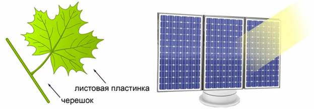
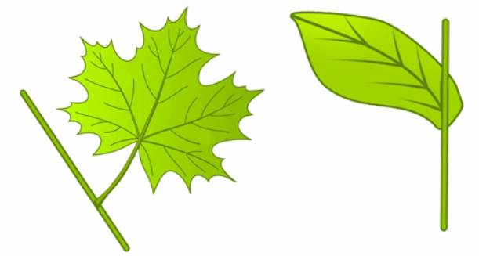
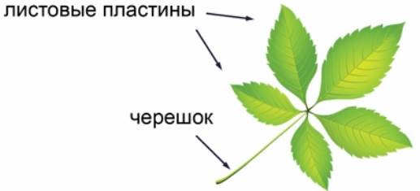
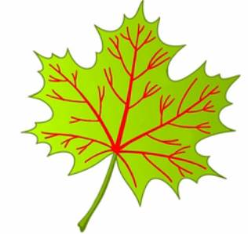
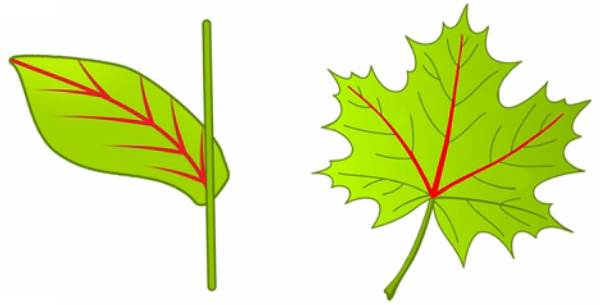
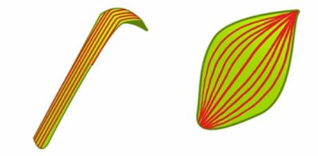

Любой орган у животных и растений в своем внешнем и внутреннем строении выполняет определенные функции, то есть ту работу, которую он делает в составе всего организма. Основными функциями листьев являются:
- фотосинтез – образование органических веществ из воды и углекислого газа с использованием энергии света;
- испарение воды.
Лист по своему строению напоминает солнечную батарею (рис. 1).

Рис. 1. Лист и солнечная батарея
Черешок разворачивает листовую пластинку к солнцу, как подставка солнечную батарею.
Большая часть листьев имеет зеленую окраску и состоит из листовой пластинки и черешка, черешок соединяет листовую пластинку со стеблем. Листья с черешками называют черешковыми (дуб, береза, конский каштан), а листья, которые крепятся к стеблю основанием листовой пластинки, называют сидячими (алоэ, пшеница), они не имеют черешка (рис. 2).

Рис. 2. Черешковый и сидячий листья
Сидячие листья лучше прикреплены к стеблю, но они хуже поворачиваются к свету. Черешок может быть только один, а листовых пластин может быть несколько, такие листья называются сложными (рис. 3).

Рис. 3. Сложный лист
Сложные листья особенно заметны осенью, когда начинают опадать отдельными листиками.
Внешний вид листовых пластинок бывает необычайно разнообразен: линии на листовой пластинке называются жилками, они представляют собой пучки проводящих тканей – ксилемы и флоэмы, по-научному это называется жилкование. Обычно по листу проходит крупная жилка, от которой вправо и влево расходятся жилки потоньше, и от них расходятся еще более тоненькие жилочки, ветвятся и расходятся еще дальше, в результате из жилок образуется целая сеть, такой тип жилкования называется сетчатым (рис. 4).

Рис. 4. Сетчатое жилкование
Сетчатое жилкование бывает двух видов: перистое и пальчатое (рис. 5).

Рис. 5. Перистое и пальчатое жилкование
Кроме сетчатого жилкования, есть жилкование параллельное, когда жилки расположены параллельно друг другу, и жилкование дуговое, когда жилки расположены по дуге (рис. 6).

Рис. 6. Параллельное и дуговое жилкование
Мы выяснили, что лист можно охарактеризовать двумя словами: черешковый он или сидячий, а также узнали, какой тип жилкования у листовой пластины. О форме листовой пластины можно узнать в дополнении к уроку.
Список литературы
1. Пасечник В.В. Биология 6 класс. Бактерии, грибы, растения. – М.: Дрофа, 2011.
2. Корчагина В.А. Биология 6-7 классы. Растения, бактерии, грибы, лишайники, 1993.
3. Пономарева И.Н., Корнилова О.А., Кучменко В.С. Биология 6 класс, 2008.
Дополнительные рекомендованные ссылки на ресурсы сети Интернет
1. Интернет портал «Kaz-ekzams.ru» (Источник)
2. Интернет портал «Почему» (Источник)
3. Интернет портал «Биоуроки» (Источник)
Домашнее задание
1. Какова основная функция листьев?
2. В чем различие между черешковыми и сидячими листьями?
3. Назовите типы жилкования листьев.